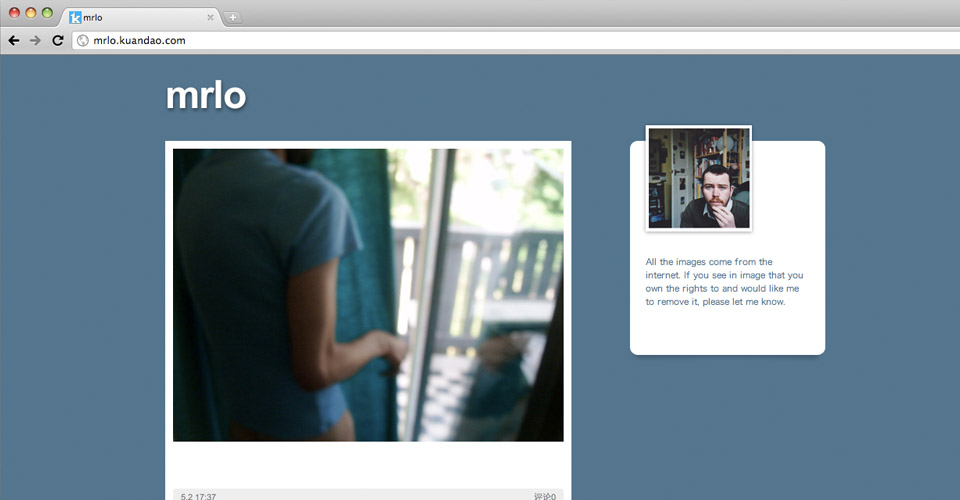
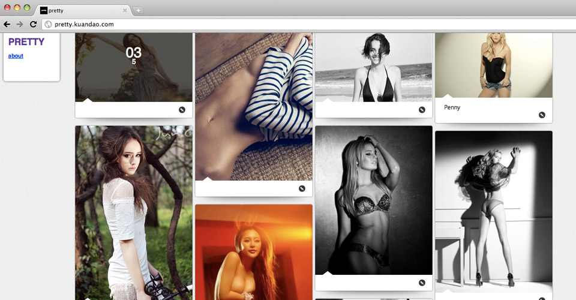

宽岛是新型的个人媒体的平台，允许用户创建多个“个人媒体”界面，用以展示自己的不同兴趣和生活方式

极简的设计 注重用户间的互动 重视优质内容的展现 注重内容的呈现方式 强悍的模板功能 支持移动设备直接访问
宽岛--每个人都是生活艺术家！

据创始团队介绍，“宽岛”的创意正是源自一种从中文SNS网站“逃离”的冲动——远离无聊的信息海洋，登岛重建家园。于是在剥离无聊的投票、转发、漫无目的的分享、及乏味的游戏功能后，宽岛意欲回归SNS的本意：对创意内容发现和分享，以及基于共同趣味的网络社交。
如果２０１２真的到来，我没有那张船票，请让我先上宽岛。
上宽岛，做真实的自己！
如果２０１２真的到来，我没有那张船票，请让我先上宽岛。
上宽岛，做真实的自己！